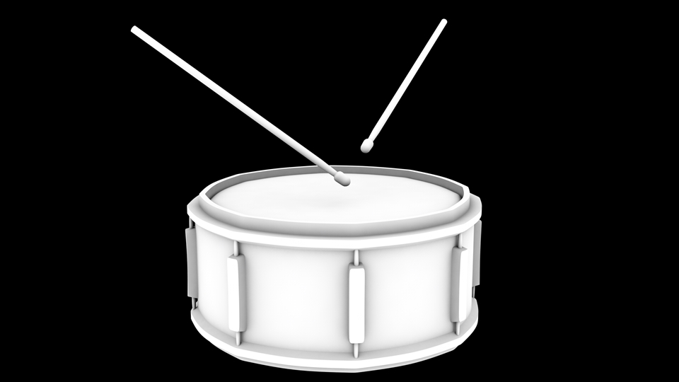

Fall Semester 2020
Individual final project
For our final project, we were tasked with creating a kinetic typography video using After Effects. The video had to be 30 seconds to 1 minute long, and needed to express the audio we were going to use.
Animated text and shape to music using After Effects.
After Effects, Cinema4D
I chose to use DRUM GO DUM by K/DA as my audio as it contained an interesting rap section that gave me inspiration for how I was going to animate it. The overall visuals for my project were inspired by a previous K/DA song, THE BADDEST.
This was my first time creating an animated video with After Effects, prior to this, I have only used it to edit and mask out parts, but nothing more advanced than that. As such, I referred to a variety of tutorials that were related to the style of animation and visuals I wanted for my video.
There are many layers and subtle background elements within each section that are there to fill in the space and give more life to an otherwise text-only frame. I relied on compositions to keep each part organized, focused, easier for my computer to handle when working through the project.
I also used Cinema4D to create the wing and drum elements. The wings were made with a simple model, an array and some MoGraph effectors. The drums were modelled and rendered with a white texture and ambient occlusion so that I could overlay different textures in post.
I created a minute long animated video with a fast paced song. This was my first time animating, and I learnt a lot in the process.
I am quite happy with the final outcome. When THE BADDEST lyric video was released, it mesmerized me for a while so being able to create something in it's likeness was something I was interested in. I enjoyed learning how to create different video elements and animate them. It took some time to make all of the animations match up with the tempo of the song, however, the final result was worth the effort.